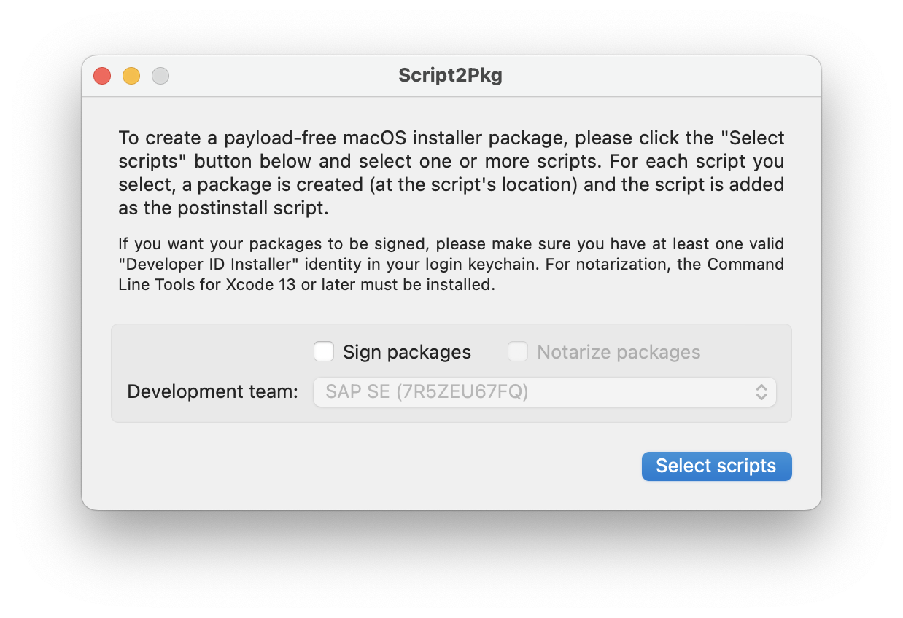
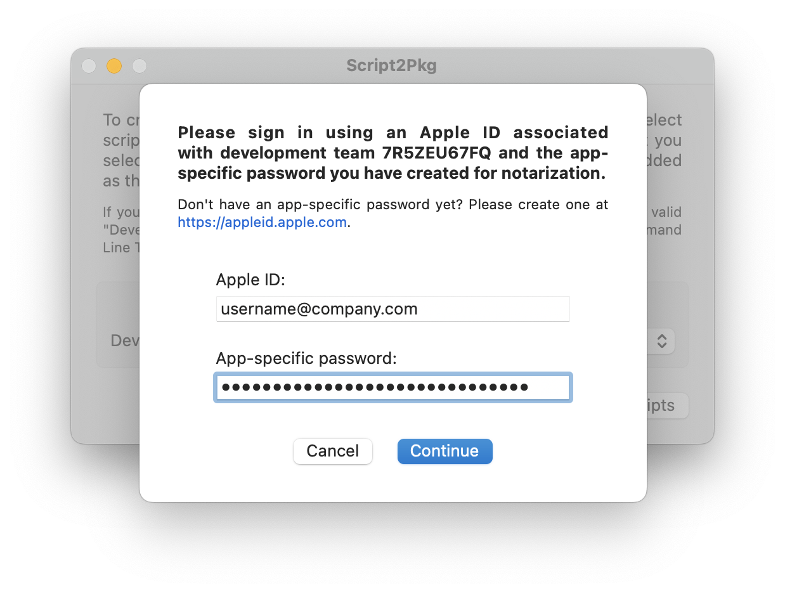
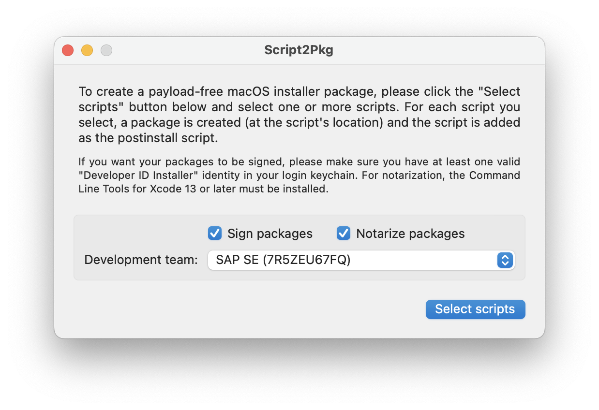

Script2Pkg
Script2Pkg
Script2Pkg
Configuring package notarization
Notarization is an additional safeguard against signed installer packages being modified by a malicious third party. The Apple notary service is an automated system that scans an installer package for malicious content and checks for code-signing issues, so notarization ensures that Apple has verified that the signed code is free of malicious content. For more information on notarization, please see the Glossary .
To use notarization with this app, an app-specific password for the Apple ID of an Apple Developer account. This may be the same account which generated your Developer ID Installer certificate, but this is not required. For more information on this, please see the following link: Customizing the notarization workflow (see the Upload your app to the notarization service section.)
For more information on creating app-specific passwords, please see the following link: Sign in to apps with your Apple ID using app-specific passwords
To configure notarization, you will first need to configure package signing: Configuring package signing
Once package signing has been configured and an app-specific password for the relevant Apple Developer account is available, use the following procedure to enable the app’s notarization options:
1. Launch the app .

2. Enable the Sign packages option.

3. Enable the Notarize packages option. You will be prompted for the Apple ID of the Apple Developer account, as well as the app-specific password created for that account.

4. The Notarize packages option will be enabled once the credentials have been entered.

Reverting to Default Settings
To change back to the default setting, please use the procedure available via the link below:
Removing notarization credentials